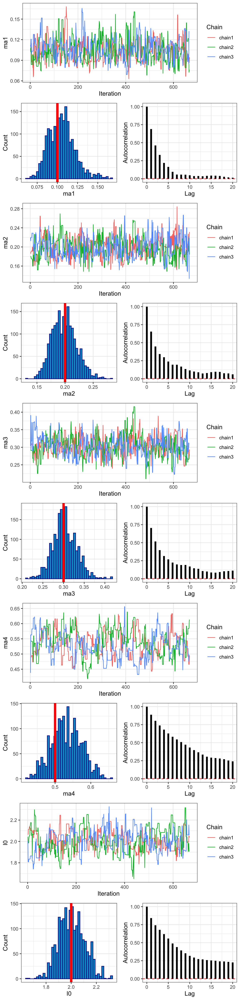

reparam_ma.Rmdlibrary(CurveAware)Here we will extend the Inferring the IFRs Scenario by assuming that we four age-specific IFRs. However, we suspect that these age-specific IFRs are very collinear. Given this collinearity, we assume that the IFRs can be represented as linear combinations of the largest IFR, and we instead fit these scalars, \(r_{1:3}\), instead of the age-specific IFRs. Given that we are fitting ‘scalars’ instead of the actual IFRs, we must reparameterize our posteriors at the end of the MCMC while also accounting for the reparamterization in our likelihood-prior calculation.
As before, we will simulate the number of deaths for day 50 of an epidemic where we have strong prior knowledge that the initial number of infected indvididuals (\(I_0\)) was 2 individuals (along with our other previous assumptions).
We will simulate that the \(m_{a1}\), \(m_{a2}\), \(m_{a3}\), and \(m_{a4}\) are 0.1, 0.2, 0.3, and 0.5, respectively, but our model will reflect that we have no prior knowledge of this true value.
casefat <- data.frame(age = c("1:25", "25:50", "50:75", "75:100"),
cfr = c(0.1, 0.2, 0.3, 0.5),
pa = 1/4)
simdat <- CurveAware::sim_infxn_2_death_cumulative(
casefat = casefat,
I0 = 2,
r = 0.14,
m_od = 18.8,
s_od = 0.45,
curr_day = 50)The cumulative case data simulation output is a named vector of the total number of deaths:
| AgeGroups | Deaths |
|---|---|
| 1:25 | 49 |
| 25:50 | 93 |
| 50:75 | 143 |
| 75:100 | 254 |
Here we will load the Cumulative Likelihood and the “strong I0” prior from our LogLikePrior_Catalog. It is important to note, that users will need to update and adapt the likelihood and prior inputs to reflect their project structure. Please see the [Updating the Likelihood and Prior for Your Project] site for further details on recommended project-specific adaptations. You will also need to specify a dataframe of your “free” parameters as described in the drjacoby vignettes. and a “misc-list” that contains the putative current day of the epidemic and the probability of infection given age, \(p_a\), for each age group (see above).
Here we will adaot the Cumulative Likelihood and the “strong I0” prior from our LogLikePrior_Catalog to reflect our updated age-specific IRFs and to account for the reparameterization. Please see the Updating the Likelihood and Prior for Your Project site for further details on recommended project-specific adaptations.
r_strongI0_prior <- function(params, param_i, misc) {
I0 <- params["I0"]
r1 <- params["r1"]
r2 <- params["r2"]
r3 <- params["r3"]
ma4 <- params["ma4"]
# get prior
ret <- dlnorm(I0, meanlog = 0.69, sdlog = 0.05, log = TRUE) +
dunif(r1, min = 0, max = 1, log = TRUE) +
dunif(r2, min = 0, max = 1, log = TRUE) +
dunif(r3, min = 0, max = 1, log = TRUE) +
dunif(ma4, min = 0, max = 1, log = TRUE) +
3*log(ma4) # account for reparameterization
return(ret)
}
r_cumulative_likelihood <- function(params, param_i, data, misc) {
# from Verity Lancet ID manuscript
m_od <- 18.8
r <- 0.14
s_od <- 0.45
# store misc item for integral
curr_day <- misc$curr_day
# free params
ma4 <- params["ma4"]
r1 <- params["r1"]
r2 <- params["r2"]
r3 <- params["r3"]
I0 <- params["I0"]
scalars <- c(r1, r2, r3)
# get age specific mortality
ma <- sapply(scalars, function(x){x * ma4})
ma <- c(ma, ma4)
# integrate for expected incidence mapped onto onset-death time lag
integrand <- function(t, gr = r){ return(
I0 * exp(gr*t) * pgamma(curr_day - t, shape = 1/s_od^2, scale = m_od*s_od^2)) }
integral <- integrate(integrand, lower = -Inf, upper = curr_day)
# total exp deaths
exp.deaths <- misc$pa * ma * integral$value
# poisson LL
ret <- sum(dpois(x = data$obs_deaths, lambda = exp.deaths, log = T))
return(ret)
}# params
df_params <- data.frame(name = c("r1", "r2", "r3", "ma4", "I0"),
min = c(0, 0, 0, 0, 1),
init = c(0.1, 0.1, 0.1, 0.1, 2),
max = c(1, 1, 1, 1, 10))
misclist <- list(curr_day = 50,
pa = c(0.25, 0.25, 0.25, 0.25))
r_mcmc_out <- CurveAware::wrap_drjacoby_mcmc(
data = simdat,
level = "Cumulative",
df_params = df_params,
misc = misclist,
LogLike = r_cumulative_likelihood,
LogPrior = r_strongI0_prior,
burnin = 1e3,
samples = 1e3
)Now that the model has finished fitting, we need to transform our posterior distributions to reflect the IFRs.
reparcols <- grepl("r[0-9]", colnames(r_mcmc_out$output))
params_repar <- r_mcmc_out$output[, c(reparcols | colnames(r_mcmc_out$output) == "ma4")]
reparcols <- grepl("r[0-9]", colnames(params_repar))
params_repar <- apply(params_repar[, reparcols], 2,
function(x){params_repar$ma4 * x})
colnames(params_repar) <- paste0("ma", 1:sum(reparcols))
r_mcmc_out$output <- cbind.data.frame(r_mcmc_out$output, params_repar)As before, we can explore the posterior distributions using plotting functions in drjacoby, namely: drjacoby::plot_par() and drjacoby::plot_cor(). For further discussions on MCMC diagnostics and assessing MCMC convergence please see the drjacoby vignettes.
Below, the posterior distribution is shown with the simulated true value indicated in as a red line for each free parameter.
